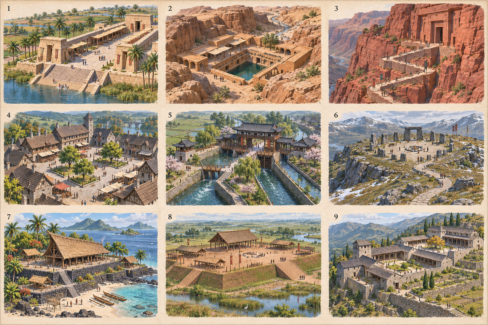
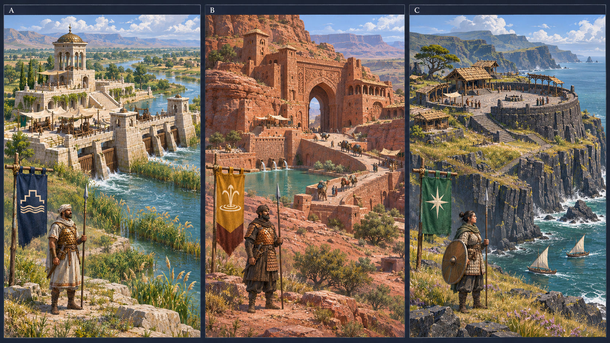
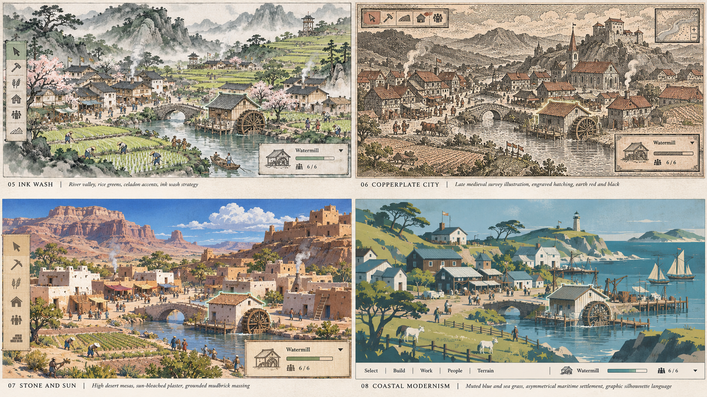
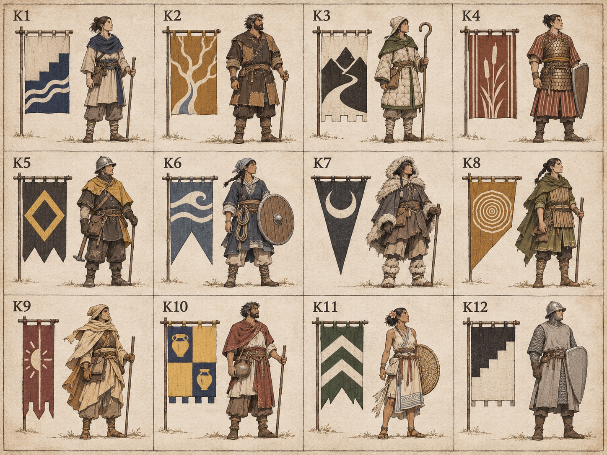
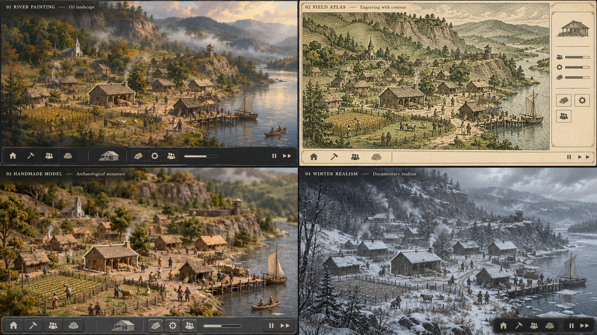
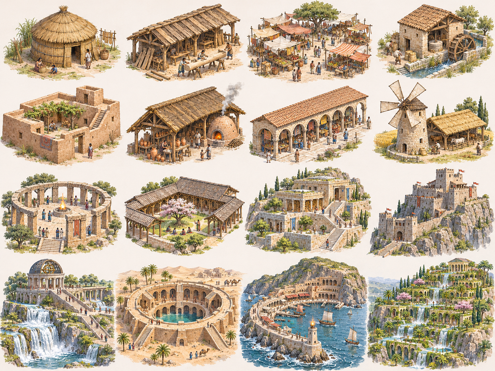
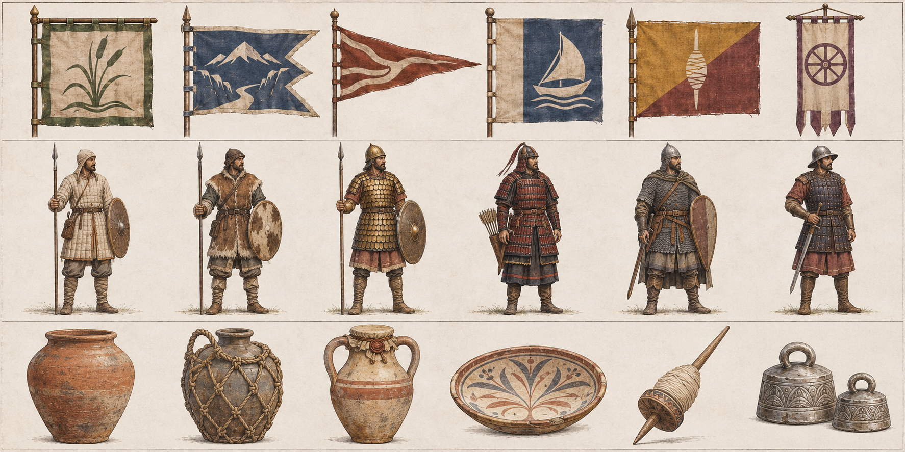
Current village — H and E comparison
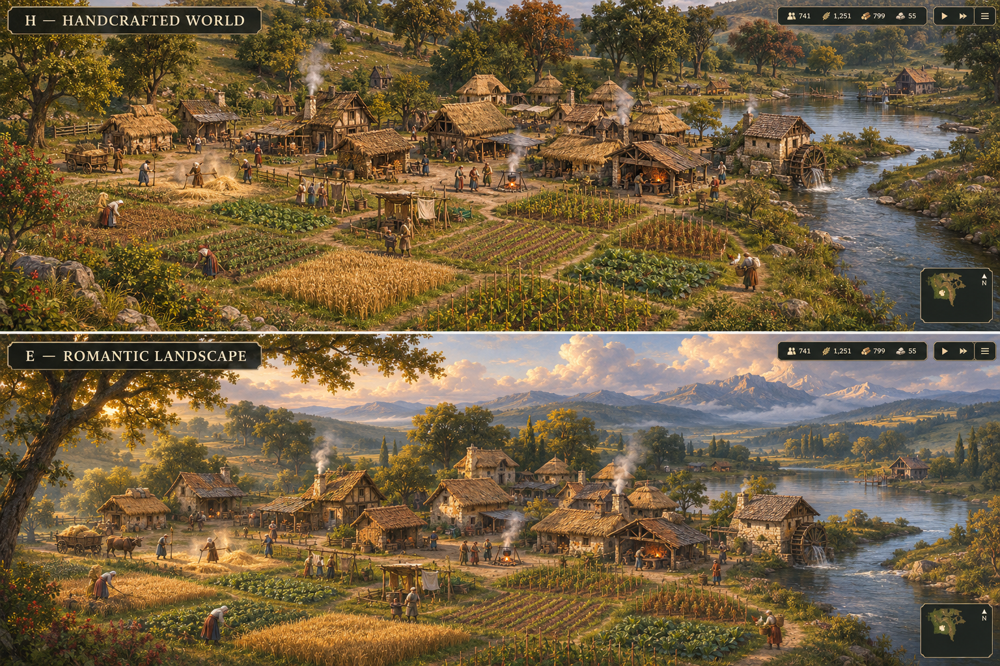
Generated concept illustration, not an in-game capture. User requests full H as the leading art target.
Favored H — carved wooden tabletop world. The original E panel is a close second. Winter realism, tribal designs, armor, flags and all other options retained. These are concept images for review.
Current graphics baseline — art-baseline-2026-11-10-ebdb6e2. Offline 3D blockouts are in the 3d-prototypes folder.
H: carved wooden tabletop world — bottom centre. E: original top-centre panel. These exact original options are the visual reference. The later village comparison did not reproduce H faithfully.
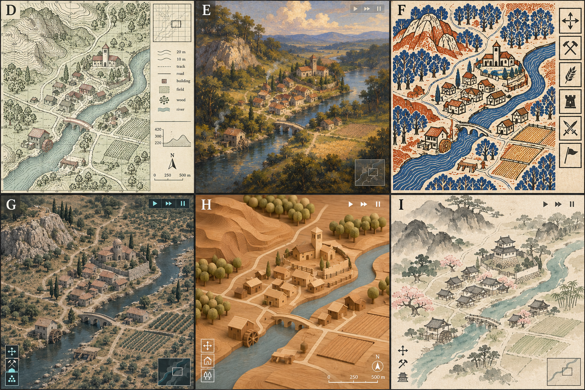
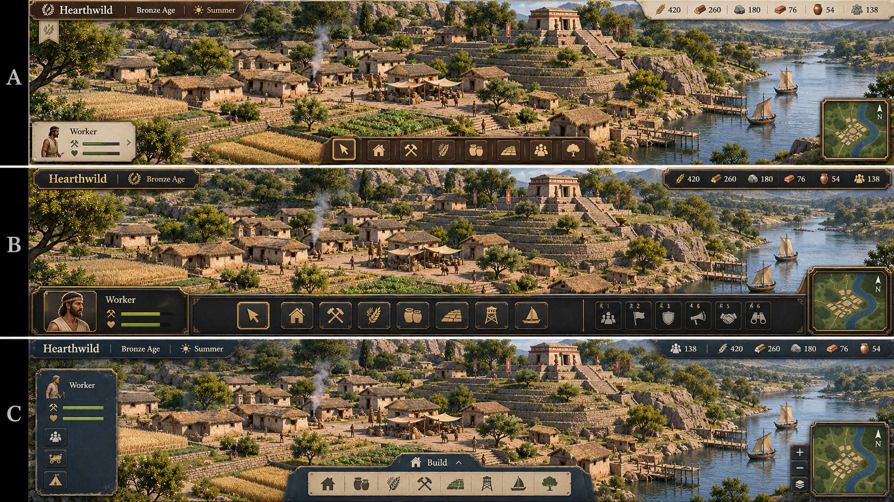
Ring Observatory · Crescent Harbor · Cascade Garden · Canyon Cistern · Assembly Court · Mill Market
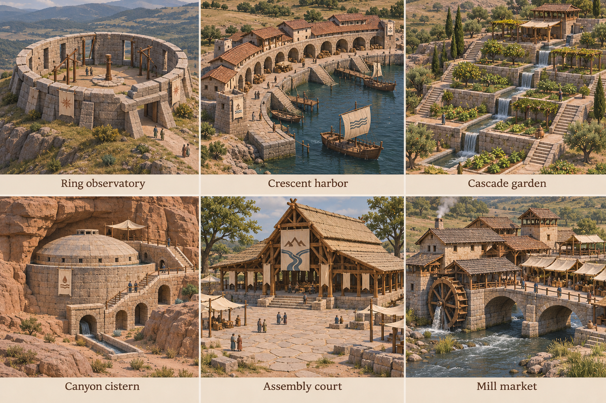








Generated concept illustration, not an in-game capture. User requests full H as the leading art target.
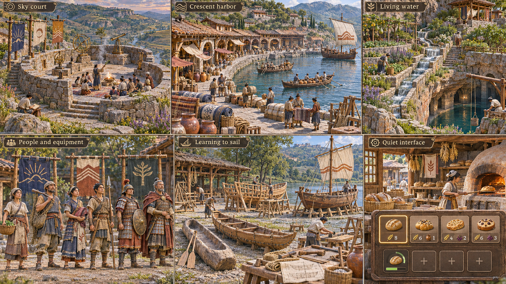
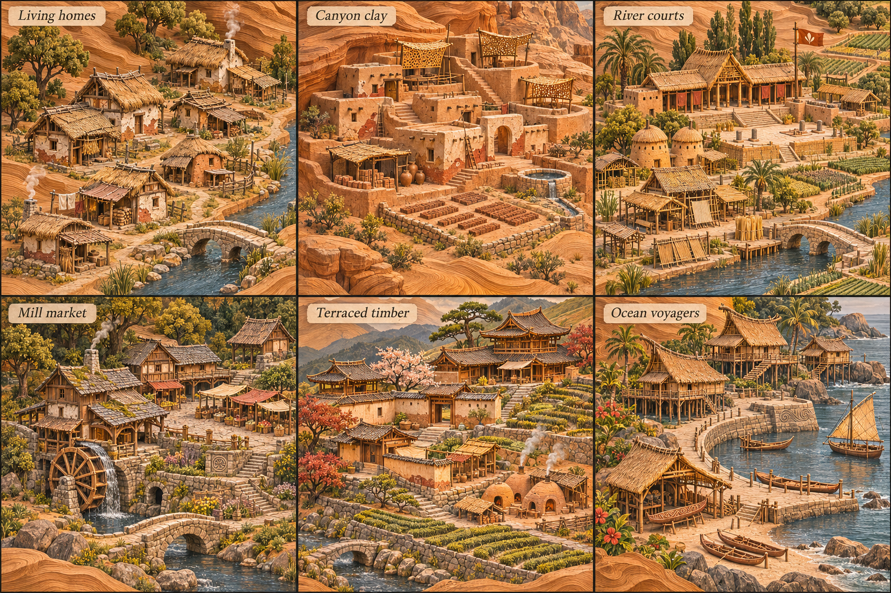
Executable Three.js model study; separate from generated concept images and current game integration.